4 — Dictionaries: fundamentals, examples, use cases
Lexicology and Lexicography
Introduction
Recap
- Morphology vs word‑formation: structure of words vs processes that create new lexemes
- Inflection vs derivation: grammatical endings (e.g., walked, cats) vs new lexemes/word classes (e.g., kindness, happiness)
- Morphemic vs non‑morphemic word‑formation: derivation/compounding vs conversion, clipping, blending, back‑formation, acronyms
- Takeaway: we reasoned about words via relations and structure — not mere lists; today we link this perspective to how dictionaries model lexis
Outline
- The Lexicon: How does lexicology move beyond lists to structures?
- Dictionaries: What do dictionaries describe and how are they used?
- Empirical study with the OED: How can we extract and analyse neologisms?
The Lexicon
Two senses of lexicon
Lipka (1992), p. 11
“In the following, I will use lexicon in two senses that are not always sharply distinguished:
- for a metalinguistic level, or a sub-component in a linguistic model; and
- in the sense of vocabulary as seen from a systematic, synchronic point of view.”
Objective of lexicology
- “What is most important, however, is that in lexicology the stock of words or lexical items is not simply regarded as a list of isolated elements.
- Lexicologists try to find out generalisations and regularities and especially consider relations between elements (see chapters n and IV).
- Lexicology is therefore concerned with structures, not with a mere agglomeration of words (cf. Jackson (1988): 222).”
(Lipka 1992, 1)
List vs structure: examples
List view: “Words in English cooking”
- butter, salt, pepper, pan, fry
Structure view (relations):
- collocation: strong tea vs. ?powerful tea
- substitution:
- cat → dog (same slot),
- fry → sauté (near-synonym)
Definition (Bauer 2022)
- “The lexicon is what linguists call the dictionary that is assumed to be in people’s heads, or the linguist’s best approximation to that.
- It is fundamentally a psychological entity, and its contents cannot be observed directly but must be deduced from speakers’ and hearers’ behaviour.
- Two fundamental approaches:
- Home of the lawless (Di Sciullo and Williams 1987) – lexicon contains whatever cannot be predicted by general rule.
- Wider approach – lexicon contains anything to do with the structure of words, whether lawless or not.”
- Home of the lawless (Di Sciullo and Williams 1987) – lexicon contains whatever cannot be predicted by general rule.
The Mental Lexicon
The Stroop Effect (Stroop 1935)
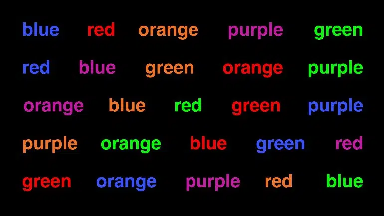
Freudian slip (Bauer 2022)
“If you talk to someone about electricity, and then make them read the phrase sham dock, they might very well say damn shock, because of prior activation of related words; the Freudian slip depends upon a subject area being readily activated in the brain and brought out inadvertently, whether because of a word related in meaning or pronunciation.”
Evidence for a mental lexicon
- Slips and blends; priming effects; Stroop interference
- e.g., RED printed in blue slows colour naming
- Reaction-time studies (lexical decision, frequency effects)
- e.g., faster decisions for frequent time than rare furloughv
- Network structure: degree, clustering, multiplex links
- e.g., dog linked to cat (semantic) and log (phonological)
Cognitive-linguistic models of the lexicon


Word embeddings (Bandyopadhyay et al. 2022)


Exercise: word embeddings
http://vectors.nlpl.eu/explore/embeddings/en/
- Explore synonyms and antonyms (Similar words)
- Enter a seed word (e.g.,
happy_ADJ). - Inspect the 5 nearest neighbours.
- Compare with an antonym (e.g.,
sad_ADJ).
- Enter a seed word (e.g.,
- Visualise semantic clusters (Visualization)
- Choose two related groups (e.g., animals vs furniture).
- Plot in vector space; describe visible groupings.
- Word analogies (Calculator)
- Try analogies, e.g.,
male_ADJ : doctor_NOUN = female_ADJ : ?. - Test several analogies; note successes and failures.
- Try analogies, e.g.,
- Investigate ambiguity
- Pick a polysemous word (e.g., bank).
- Analyse how neighbours reflect different senses.
Associations in the lexicon
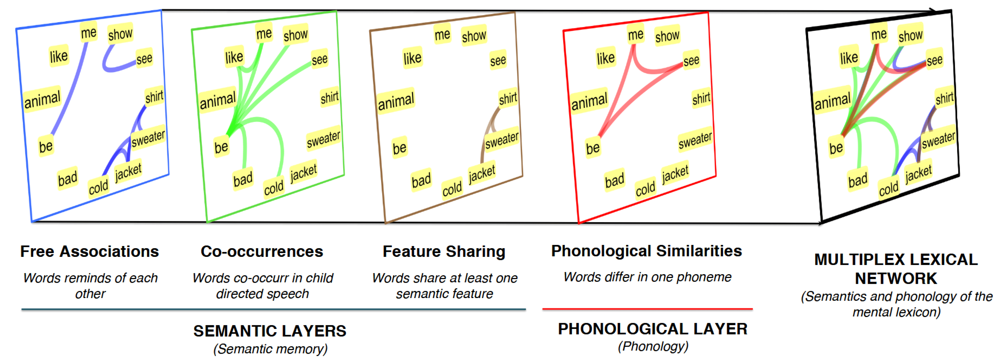
Dictionaries (Bauer 2022)
What is a word?
- “A word is listed in the dictionary.” (Bauer 2022, 2) But:
- circular reasoning – words are listed because they are words
- dictionaries also list smaller units (e.g. prefix un-)
- circular reasoning – words are listed because they are words
- “[…] in general we will accept the spelling conventions of English as defining words. This may not be terribly scientific, but it has the advantage of being practical.” (Bauer 2022, 3)
Definition of dictionary
- “The term dictionary is usually restricted to real-world dictionaries that appear in print and online.
- Dictionaries provide a list of words of whatever language they deal with – in our case, English – and then give a certain amount of information about each of them.
- They tend to have two functions, which may at times conflict:
- Describe the language as it is (descriptive)
- Provide an influence for establishing and maintaining the standard form of the language (prescriptive)”
- Describe the language as it is (descriptive)
From data to dictionary entries
- Corpus evidence → candidate headwords and senses
- e.g., spike of tokens for doomscrolling in 2020–2021
- Sense discrimination from usage patterns
- e.g., tablet with screen/apps vs stone/clay/inscription
- Definition writing and usage labels (register, region, style)
- e.g., ain’t = informal; soccer = chiefly AmE
- Attested examples and cross‑references (derivatives, phraseology)
- e.g., earliest citation; link attention ↔︎ “pay attention”
How are definitions written?
- Genus–differentia
- e.g., raptor: ‘a bird of prey’
- Paraphrase
- e.g., whisper: ‘to speak very quietly’
- Controlled vocab1
- e.g., ban: ‘to say that people must not do something’
- Clarity vs coverage
- e.g., platform (social media): clear for learners, but omits older senses
Ordering senses
- Chronological (OED) vs prototypical/frequency‑first (learner’s)
- Impact on user tasks (history vs learning)
- Criteria: earliest attested vs most typical/current; user intent matters
Example: tablet
- OED (historical principle): ‘slab/stone or clay for writing; pill’ → later ‘flat touchscreen computer’
- Learner’s (prototype/frequency): foregrounds ‘flat touchscreen computer’ for modern users
Consequences
- Chronology helps trace change and citations.
- Prototype helps comprehension and production.
Usage labels
Purpose: guide choices, not police usage
Typical labels with examples:
- region: lorry — chiefly BrE; soccer — chiefly AmE
- register: ain’t — informal; request vs ask — formal vs neutral
- field: suture — medical; lemma — linguistics
- stance: pejorative/derogatory flags where appropriate
Principles: base on attested use; avoid over‑labelling; use neutral wording in definitions.
Check: propose appropriate labels
- sick (‘excellent’) — labels? _______ (region/register/stance?)
- they (singular for a specific person) — labels? _______ (usage note?)
- data as a singular mass noun — labels? _______ (field/register?)
- woke (adjective, politicised) — labels? _______ (stance/region?)
- soccer in UK newspapers — labels? _______ (region/chronology?)
Solution
- sick (‘excellent’) — register: informal/slang; originally AmE but now widespread
- they (singular for a specific person) — usage note: grammatical acceptability; register: formal/neutral
- data as a singular mass noun — field: computing/technical; register: formal contexts favour plural, informal favours singular
- woke (adjective, politicised) — stance: pejorative/derogatory in some contexts; region: originally AmE
- soccer in UK newspapers — region: chiefly AmE (though historically BrE); chronology: shift from BrE to AmE usage
Phraseology in entries
- Collocations (strong tea, heavy rain), patterns (V + decision)
- MWEs: idioms, phrasal verbs, compounds
Which is the “better” collocate?
- heavy/strong rain
- deeply/strongly held belief
- do/make research
- commit/make a crime
- take/make a decision
Solution
- heavy rain
- deeply held belief
- do research (though conduct research is also common)
- commit a crime
- take/make a decision — Both acceptable: make a decision (chiefly AmE), take a decision (chiefly BrE)
Why examples matter
- Citations justify senses and usage labels
- Curated vs auto‑extracted: precision vs coverage
- Bias: genres, time periods, contributor communities
- e.g., pre‑2000 internet slang (e.g., noob) under‑represented in print‑heavy sources → missing senses
- e.g., BrE vs AmE: American news sources over‑represent make a decision vs BrE take a decision
- e.g., field bias: biomedical corpora inflate plural data are vs general usage data is
Descriptivism vs prescriptivism
Bauer (2022): 18
- “If we assume that one of ’kilometre and ki’lometre is right (and the other therefore wrong), we assume that there is a unique solution to this question of English usage …”
- Language questions are more often like the jeans question (multiple acceptable answers) than like the drive-on-the-right question (single legal answer).

Proof of the existence of words
“First of all, dictionaries provide evidence of the existence of a word. The fact that a word is listed in a dictionary at all is taken to prove that there is such a word. This can be misleading in two ways:
- Dictionaries sometimes list erroneous words that have no existence outside the dictionary (e.g. banket, sardel).
- Dictionaries more often fail to list perfectly good words – no dictionary can list every word of English.”
(Bauer 2022: 19)
Information provided in the OED
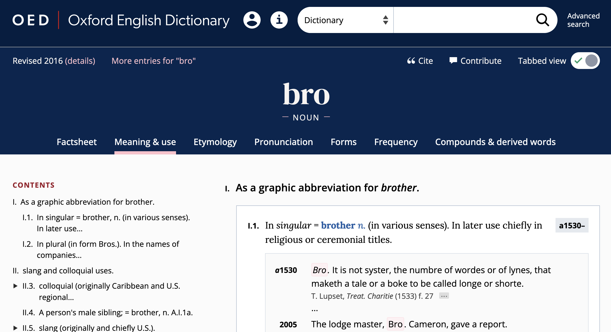
Selected dictionaries
Urban Dictionary
https://www.urbandictionary.com/
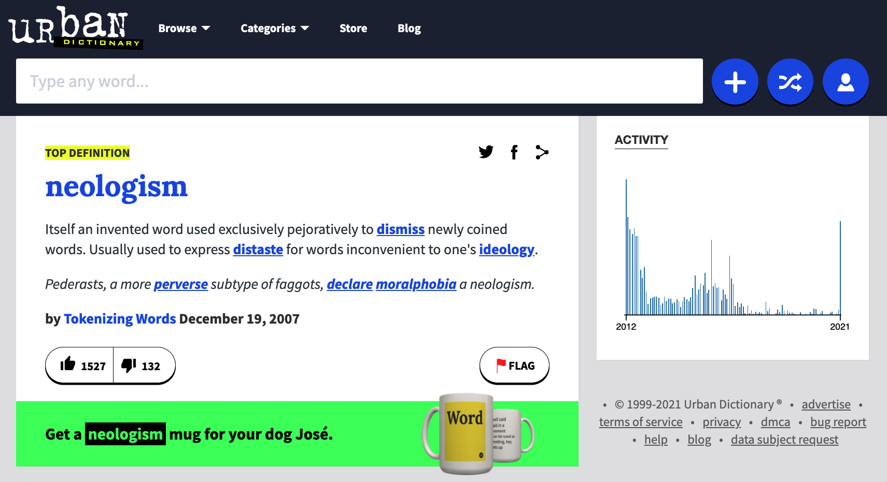
Wiktionary
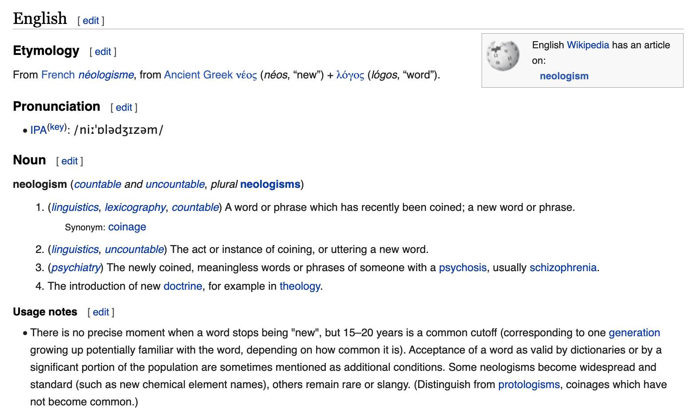
WIND (Machine-readable Wiktionary)
Sajous, Calderone, and Hathout (2020)
http://redac.univ-tlse2.fr/lexiques/wind.html

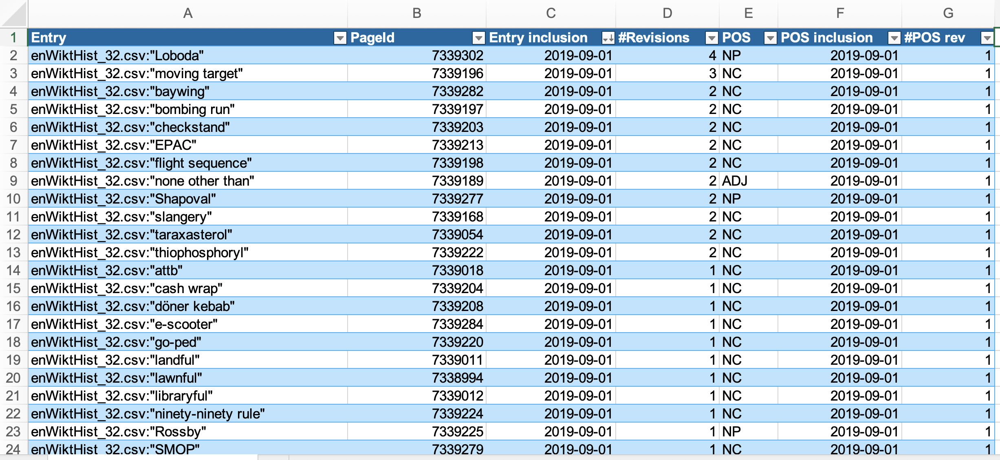
Oxford English Dictionary (OED)
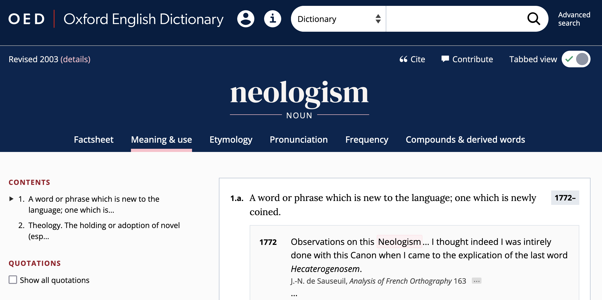
Advanced search interface
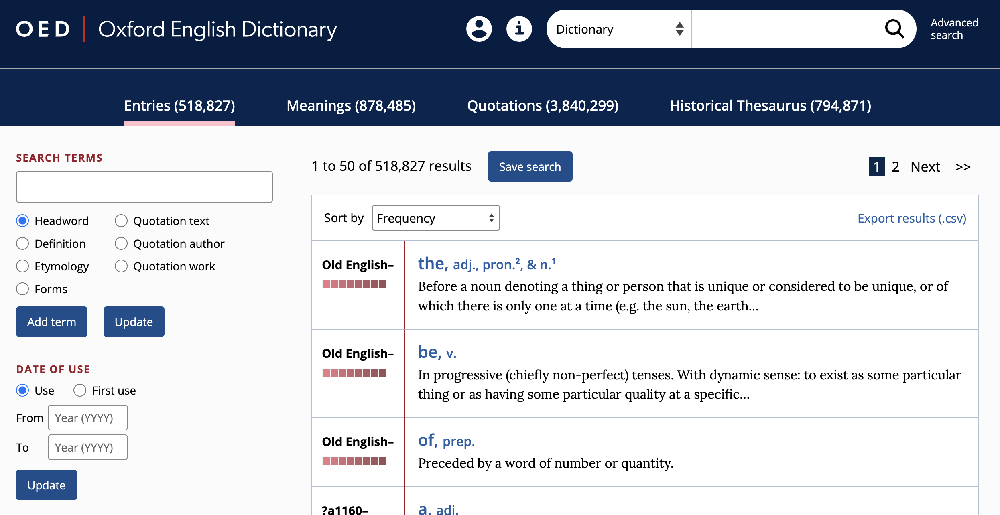
Studying word-formation based on empirical data using the OED
Research questions
- Which neologisms have entered the OED since 2000?
- What are the most common word classes among these recent neologisms?
- What are the most common word-formation processes?
- Which semantic domains are most common?
- Since when have these neologisms been in use?
Extracting neologisms from the OED
Using OED’s Advanced Search functionality, we can extract neologisms – words that have only been used since the year 2000 – from the OED.
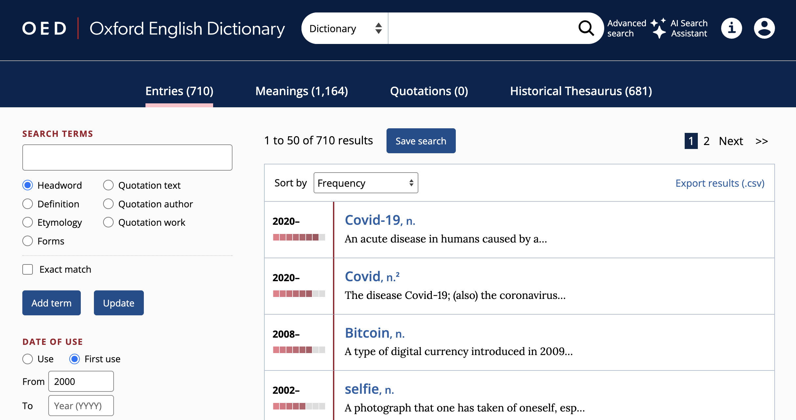
Analyzing the data in Microsoft Excel
model Excel sheet: URL
Data preparation
- Open a blank Excel sheet.
- Click
importandCSV file. - Select file origin encoding to
Unicode (UTF-8). - Specify that the data are delimited by commas (
csv) as column separator. - Convert the region containing the data to a
Table. - Insert one
Pivot Table(andPivot Chart) for each research question.
Table
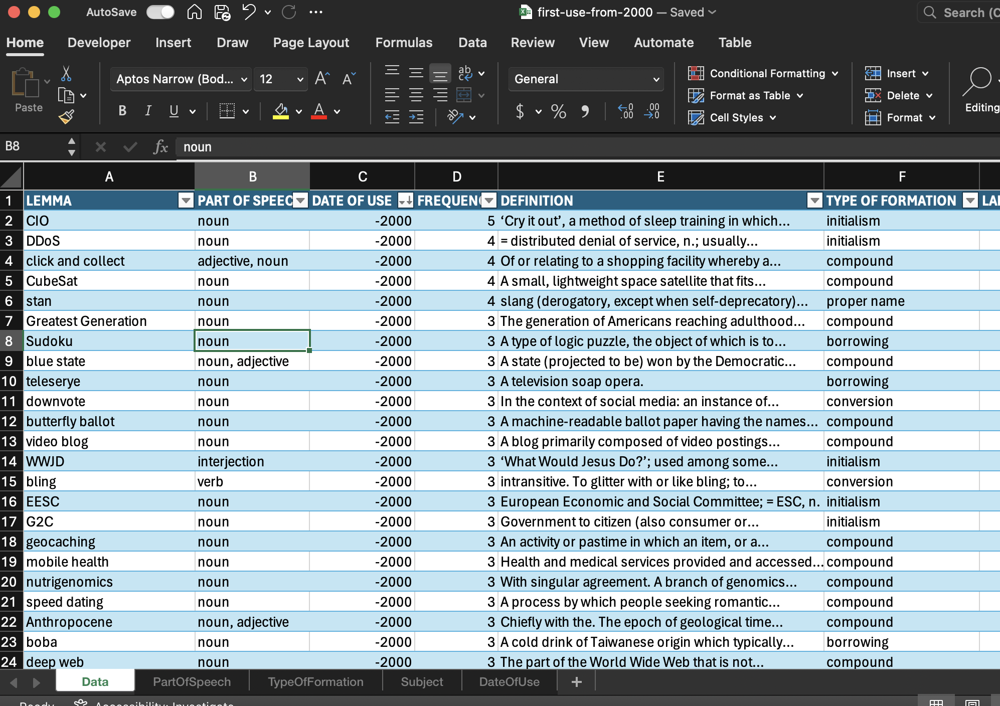
Pivot Table
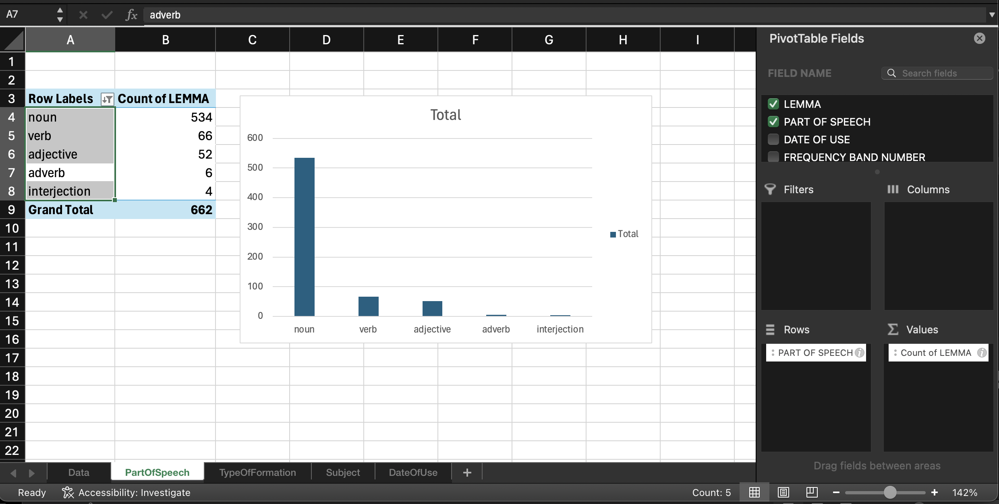
References
Footnotes
Definitions use a restricted set of common words (typically 2,000–3,000) to avoid circular lookups; common in learner’s dictionaries.↩︎